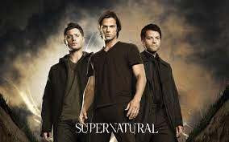

SUPERNATURAL

Supernatural trata sobre los hermanos Sam y Dean Winchester, quienes se dedican a cazar criaturas sobrenaturales como demonios, fantasmas y monstruos a lo largo de Estados Unidos. La serie comienza cuando los hermanos, tras la muerte sobrenatural de su madre a manos de un demonio, siguen los pasos de su padre y se convierten en cazadores. La trama abarca desde leyendas urbanas hasta mitología cristiana y otros seres sobrenaturales.